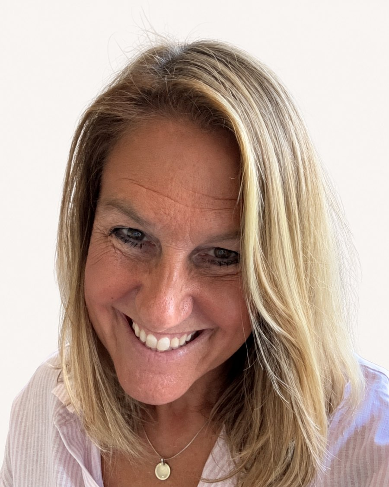
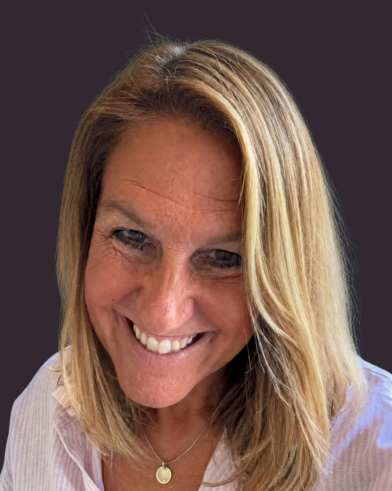

Førsteamanuensis i pedagogikkInstitutt for lærerutdanning
Fakultet for samfunns- og utdanningsvitenskap, NTNU
Digital teknologi i pedagogisk praksis
Forskning, utviklingsarbeid og formidling om profesjonsfaglig digital kompetanse, danning og estetiske læreprosesser — i barnehage, skole og lærerutdanning.


Om megForedrag, forskningsformidling og praktiske ressurser.
Debattinnlegg fra hele DIGIT-prosjektet om hva samtalen om digitalisering i skolen burde handle om i stedet. Åpnes hos Utdanningsnytt.
Om hva generativ KI gjør med skolens oppdrag, og hva som da kreves av dem som leder.
Foredrag for Institutt for pedagogikk og livslang læring ved NTNU.
Muligheter, rammer og dannelsesperspektiv — seks kategorier for skolen, fire for barnehagen.
Systematisk litteraturgjennomgang av 467 studier om skolelederes rolle i utviklingen av lærernes digitale kompetanse. Fra LeadDig-prosjektet.
Om bokutgivelsen og hvordan digital teknologi kan styrke elevaktiv og faglig undervisning.
Nytt samarbeid om forskningsnære utviklingsprosesser og kunnskapsbasert innovasjon.
Prinsipper og praktiske tips for en poster som faktisk fungerer, inkludert oppsett i PowerPoint.
Om ICILS 2023, varig utviklingsarbeid og hvordan skoler kan styrke elevenes grunnleggende digitale ferdigheter.
Om profesjonelle læringsfellesskap som motor for kollektiv kompetanseutvikling.
En faglig rød tråd fra avhandlingen til norske og danske bokutgivelser.
Fem prosjektspor jeg arbeider i nå. Alle har sin egen omtale under Forskning.
Oppdrag fra Utdanningsdirektoratet, jeg leder arbeidspakke 4
Digitalisering, læring og vurdering i grunnopplæringen. Min arbeidspakke går inn i faget på 5.–13. trinn: norsk, matematikk, engelsk og samfunnsfag.
Forskningslinje, tilknyttet AI-Learn
Kunstig intelligens i elevenes læringsprosesser, i undervisningsdesign og i vurderingspraksiser.
Finansiert av Norges forskningsråd, 2023–2027
Skolelederes egen læring i arbeidet med lærernes digitale kompetanse. Seks skoler i Orkland kommune, 2023 til 2027.
Følgeforskning på DigSkole
PfDK, elevenes læringsstrategier og sammenhengen mellom formelle og uformelle læringssituasjoner.
Konsortium
Samarbeid om forskningsnære utviklingsprosesser og kunnskapsbasert innovasjon.
Praktiske veiledninger som fortsatt får besøk.
Steg for steg til skjermopptak på Mac med QuickTime Player.
En praktisk oversikt over opptak, redigering, publisering og didaktiske grep.
Jeg skriver om forskning, undervisning og digital teknologi i pedagogisk praksis.